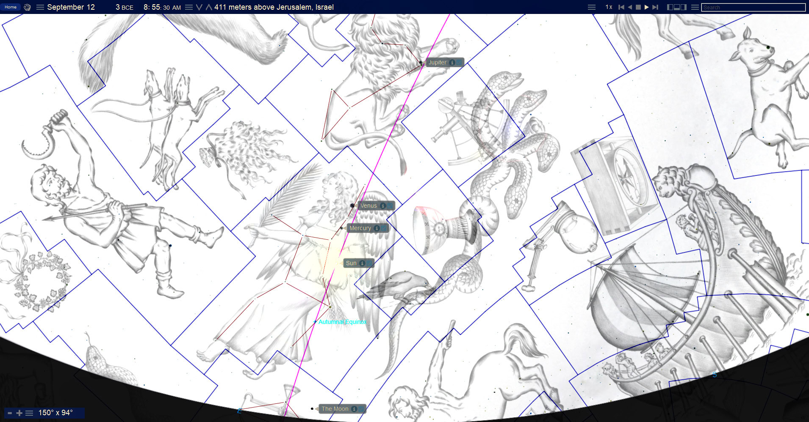
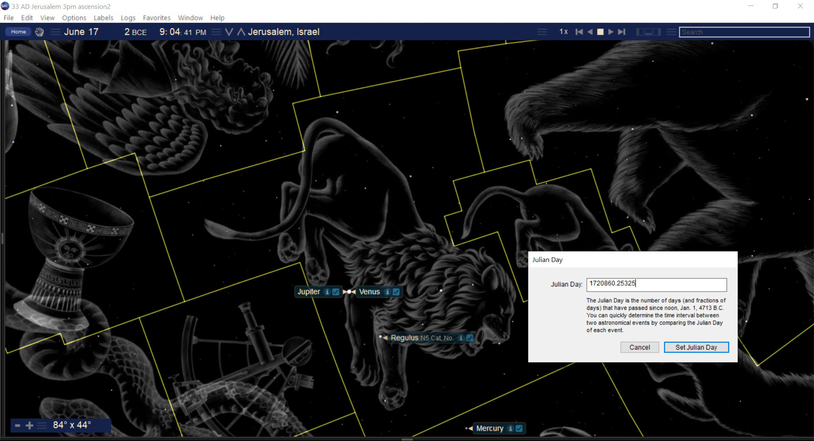
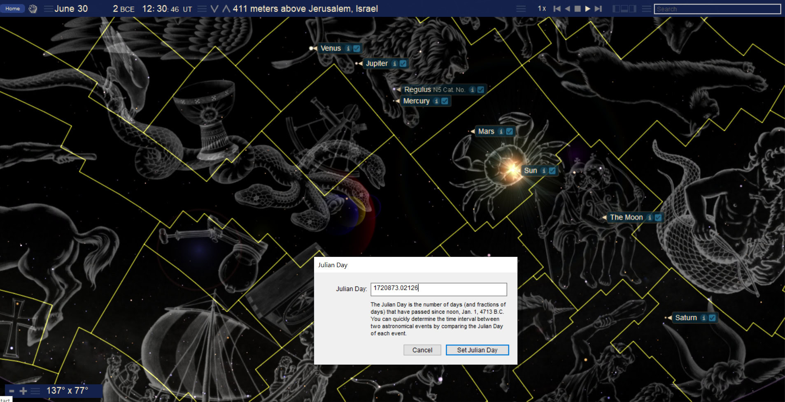

The Birth of Christ and the Witness of Heaven
Book 2 · Celestial Signs of the First Advent · Chapter 1
Book 2 · 19 October 2026
What did the heavens bear witness to when Christ entered the world?
Matthew gives us a direct reason to ask. Men arrive from the east asking, “Where is the One who has been born King of the Jews?” They have seen His star and have come to worship Him. Luke brings the heavenly host into the account of His birth. John sees a woman, a child, and a dragon, with the Sun, Moon, and stars drawn into the vision. The birth belongs to the earth, but the witnesses extend beyond it.[1]
Book 1 followed the Passion toward the Cross at the center of time. Here I return to the birth of Christ and then follow the wider history that surrounds His coming. I want to consider what the heavens may have been saying about events on earth, including things the people living through those events may never have understood.
I distinguish throughout between a calculated event and my reading of its meaning.
The birth seen from heaven
Luke describes shepherds being told where to find the Child. He also describes a multitude of the heavenly host praising God. Those are two sides of the same event. The shepherds receive a revelation; heaven already knows that there is something to announce.
That perspective governs this book. I do not regard heaven as a decorative backdrop to human history. Christ’s coming matters to the heavenly host, and the meaning of His coming does not depend on how much of it people recognized at the time. Paul makes a related point when he says that God’s wisdom is made known through the church to rulers and authorities in the heavenly realms. Human beings are participants in the revelation, but they are not its only audience.[2]
This matters when we examine celestial signs. An eclipse can occur where few people see it. A planetary arrangement can be hidden by daylight. Even a conspicuous conjunction can pass without anyone understanding its significance. Those facts affect what we can say about human observation. They do not settle whether an event could bear witness before God and His heavenly host.
I read the arrangements examined in this book as part of that larger witness. The coming of Christ concerns the whole creation. I cannot supply a record of what an angel understood when a planet passed a star, but Scripture gives me reason to consider a heavenly audience. The absence of an earthly report does not close that question.
The visible sky is itself part of creation. It does not exhaust what Scripture means by heaven. When I use a sky chart, I am examining a physical arrangement that may carry meaning within a reality larger than the chart can display.
What Matthew tells us about the star
Matthew’s account deserves to remain intact before any astronomical explanation is placed beside it. The Magi associate a star with the birth of the King of the Jews. Herod asks when the star appeared. The visitors later enter a house and see the Child with Mary. Matthew also describes the star going before them and standing over the place where the Child was.[1]
The passage gives no Julian date and names no planet. It does not say that every celestial event surrounding Christ’s coming must be the same event the Magi saw. Nor does a calculated conjunction, by itself, explain the star’s guidance to a particular place.
For that reason, I approach the material as a sequence of possible witnesses to Christ’s coming. Identifying the Magi’s star is a more specific question. It requires the chronology of their visit, Herod’s actions, and Matthew’s description of the guidance to be considered together. A striking picture cannot do that work on its own.
This leaves room to examine several events without making each one compete for the same role. A sign may announce, accompany, or look back upon the coming of the King. Its date remains its date. The interpretation must explain its relationship to the birth.
Why several dates appear in this book
Readers should not have to discover halfway through the argument that a date has changed its meaning. Three chronological settings need to be clear at the outset.
| Setting | Date or period | Its role here |
|---|---|---|
| Historical birth anchor | 6 BC | The historical Christ anchor retained in the canonical Repository. |
| Celestial sequence | 3–2 BC | The dated Virgo and Leo scenes examined below; their proposed relation to Christ does not independently establish His birthday. |
| Received birth and naming framework | December 25, 1 BC, and January 1, AD 1 | The traditional calendar framework used for the birth, eighth-day naming, and covenant comparisons developed in Book 1. |
The Repository keeps the historical anchor and the received calendar framework distinct. I retain that distinction here. December 25, 1 BC, is not being offered as a correction of the 6 BC historical anchor, and a conjunction in 2 BC does not silently move the historical birth to that year.[3]
The received framework has its own exact relationship: December 25 to January 1 is seven elapsed days, with January 1 the eighth day when the birth date is counted as day one. That is the naming and circumcision pattern used in Book 1. Its arithmetic can be examined without claiming that the Gospel supplies those civil dates.
File 13 also sets these matters within a seven-year Incarnation or New Creation pattern. In its Nisan form, this runs from the opening of the Nisan year in 6 BC to the opening of the Nisan year in AD 2. The sixth year runs from Nisan in 1 BC to Nisan in AD 1; the seventh, the year of rest, runs from Nisan in AD 1 to Nisan in AD 2. There is no year zero in ordinary BC/AD counting, so the whole interval is seven years.[3]
That is a structural comparison with the Creation week. It is not a proposal that Mary’s pregnancy lasted seven years. It provides a larger period within which the historical anchor, the later celestial scenes, and the received calendar relationships can be considered without merging their dates.
The 3–2 BC sequence therefore belongs here as a proposed witness within that larger Incarnation pattern. I am not identifying it in this chapter as the astronomical record of the night Jesus was born or of the Magi’s visit. That historical identification remains open. The sequence itself can still be described and its proposed meaning examined.
Unless otherwise stated, the ancient civil dates in this book are Julian. The charts sometimes use “BCE,” which has the same year labels as “BC.” Astronomical software may also use a year zero; that separate convention is explained in the calculation records whenever it is needed.
The earlier setting in Pisces
The first group of events lies in the years around the Repository’s historical birth anchor. In 7 BC, Jupiter and Saturn approached one another three times in Pisces, the Fishes. The repeated approaches result from their changing apparent motion as seen from the moving earth. A triple conjunction is a sequence of encounters, rather than three events occurring at once.
The three encounters fall in late May, around the end of September or beginning of October, and early December. At each encounter the planets remained roughly a degree apart. The older calculation and a fresh independent calculation differ on the precise minima, so I retain that broader dating here while the detailed record is reconciled. This sequence should not be confused with the much closer Venus–Jupiter encounter in 2 BC.[4]
The raw material also places a grouping involving Mars, Jupiter, and Saturn in 6 BC, followed by a Chinese “broom-star” report in 5 BC. Colin Humphreys discusses that report as a comet candidate in his study of the star of Bethlehem. I retain these events as context without adopting his identification of the comet as Matthew’s star or deriving a new birth date from it.[5]
This earlier setting matters because the heavens around Christ’s coming contain more than the familiar image of a single bright star. The Pisces encounters belong to the earlier part of the inquiry. The woman and the royal imagery in Virgo and Leo belong to a later sequence. Keeping their dates visible allows us to compare them without manufacturing one continuous night in the sky.
The woman and the royal child
John introduces the heavenly scene this way:
“And a great sign appeared in heaven: a woman clothed in the sun, with the moon under her feet and a crown of twelve stars on her head.”
Revelation 12:1 BSB
The woman is pregnant. The dragon waits to devour her child. Her son is destined to rule the nations and is caught up to God and His throne. John’s vision takes the reader from birth into heavenly conflict and royal authority. It is already larger than an ordinary account of a delivery in Bethlehem.
The imagery has roots within Scripture. In Joseph’s dream, the Sun, Moon, and stars speak about his family. Judah is associated with the lion and the scepter in Jacob’s blessing. Revelation later names the Lion of Judah and then presents the slain Lamb. Those passages give the woman, the lights of heaven, and the royal imagery their biblical setting.[6]
Against that background, consider the supplied sky view for September 12, 3 BC. The Sun lies within Virgo, the Maiden, and the Moon appears below the feet of the traditional figure. Jupiter lies farther along the same region of sky in Leo, the Lion. The arrangement invites comparison with John’s imagery.


I am proposing that comparison. John does not name the constellation Virgo in this passage or give a Julian date. Nor does the illustration establish an exact twelve-star crown. Those elements of the interpretation must be argued from the text and the sequence, rather than supplied by a drawing.
Two details of the image need to be understood. First, the constellation figure and the modern astronomical boundary are different things. “Under her feet” describes a position in relation to the traditional drawing. It does not require the Moon to be inside the modern boundary assigned to Virgo. Second, the supplied panel represents a daytime arrangement. Software can reveal stars and planets that daylight would conceal from an observer. The young waxing Moon belongs to the evening sky; this image is not evidence of a morning crescent sighting.[4]
Within the following months, Jupiter made three close approaches to Regulus in Leo. The working sequence is September 14, 3 BC, February 17, 2 BC, and May 8–9, 2 BC. The modeled minimum for the last encounter falls on May 9 in Universal Time. All three approaches lie within a degree in the existing audit.[4]
The repeated return gives the royal comparison its movement. A planet traditionally associated with kingship approaches the star whose name, Regulus, means “little king,” within the figure of the Lion. I read this alongside the biblical promise of Judah’s ruler. The planet remains a created body; the king whose coming concerns this book is Christ.
Venus and Jupiter draw together
On June 17, 2 BC, Venus and Jupiter came exceptionally close in Leo. The broad view places the encounter within the Lion, while the enlarged view shows the two rendered planetary disks beside one another.



The images make the relationship easier to grasp than a string of coordinates. From earth, the directions toward the two planets nearly coincided. The planets themselves remained widely separated in space. A close conjunction is an alignment of sight, and the enlarged disks should not be mistaken for an unaided-eye view.
I treat this encounter as a royal image within the sequence already introduced: the woman, the child, the repeated approaches in Leo, and then two bright planets drawing together. The event does not establish its own theological meaning. Its place in the surrounding sequence, read with Scripture, is what gives the comparison substance.
The exact minimum separation is recorded with its calculation method in the accompanying notes. The chapter’s argument depends on the close encounter and its setting, rather than on an unqualified claim that one planet covered the other.
The procession on June 30
Thirteen days later, on June 30, 2 BC, the Sun, Moon, Mercury, Venus, Mars, Jupiter, and Saturn formed a procession across the same broad region of sky. These are the seven bodies traditionally called the wandering lights. In modern astronomical language, the group consists of the Sun, the Moon, and the five planets visible without a telescope.


The image is wide because the arrangement is spread across several constellations. In the modern astronomical boundaries, Mercury, Venus, and Jupiter are in Leo; the Sun and Mars are in Cancer; the Moon is in Gemini; and Saturn is in Taurus. The Lion’s extended drawing reaches beyond its formal boundary, so the artwork can give the impression that more bodies occupy Leo than actually do under that definition.[4]
“Procession” describes their arrangement along the sky. It does not mean that all seven stood in one tiny cluster or that a crowd in Jerusalem watched them together. The supplied panel is a daytime view with the stars made visible by the software.
This brings us back to the perspective with which the chapter began. The arrangement exists whether someone on earth sees the whole of it or not. I suggest that it can be read as a heavenly assembly around the coming of the King. The image’s value lies in making that proposed relationship visible to us. It cannot tell us what the people of Jerusalem, the Magi, or the heavenly host understood.
Placed beside the preceding scenes, the procession completes the opening sequence: the woman with the Sun and Moon, Jupiter’s repeated approaches to Regulus, the close meeting of Venus and Jupiter, and then the gathering of the seven wandering lights. These events occupy months. Their order is part of the proposed meaning.
How I will read these signs
The ancient names and figures belong to the shared image-world of the nations. I do not assume that every myth attached to them is true. My argument is that God can use a familiar image while exposing or overturning the claims made for it. A lion can speak of rule without making every story about a celestial lion authoritative. A planet can carry a royal association without becoming a god.[7]
Scripture supplies the interpretation I am testing. The sky supplies events whose dates and positions can be checked. A calculation tells us where Jupiter was; it cannot, by itself, tell us why God placed a sign there. Equally, a theological conviction does not allow us to move Jupiter to a more convenient position.
The illustrations will therefore remain attached to specific events. Where an old screenshot has an unexplained clock setting or an imprecise label, its caption and source record will say so. I want the reader to be able to distinguish the visible arrangement, the calculation behind it, and the meaning I propose.
That discipline serves the heavenly perspective. We can acknowledge an event hidden from human view without inventing an earthly witness to it. I want the significance I see to be stated plainly, with the underlying material accessible enough that another person can correct a detail without losing the argument.
From the birth to the wider history
The next chapter will examine the woman, child, and royal sequence more closely, including what the comparison with Revelation 12 can bear. The following chapter will turn to the lunar scenes around the received birth framework and the imagery of the Manger or Beehive cluster.
From there we return to Abraham. The promise to him gives the wider history its direction: the blessing reaches the nations. The Exodus, the crossing into the land, Christ’s ministry, His death and exaltation, Jerusalem’s fall, and the spread of the Gospel will be considered within that history. The later discussion concentrates on the period around AD 70, while identifying any comparisons that extend beyond it.
I begin with Christ because He is the center of the inquiry. The birth scenes establish the way we will proceed: attend to the earthly event, examine the heavens, and ask how the two may bear witness together. Heaven’s part in that witness is worth considering even where the surviving earthly record is silent.
Sources and notes
1. The birth accounts and heavenly vision. Matthew 2, Luke 2, and Revelation 12. Matthew 2:11 specifies a house. Identifying a particular astronomical event with the Magi’s star remains a separate historical and interpretive question.
2. A heavenly audience. Luke 2:8–20 and Ephesians 3:10–11. The suggestion that an individual astronomical configuration could be understood by heavenly beings is the author’s interpretation, not a claim that these passages identify that configuration.
3. Chronological controls. Canonical File 13, Christological Matrix, especially §§0.1, 0.7, 1.1–1.2, 2.1–2.2, and 7.1–7.4, checked October 19, 2026. Its Nisan form is 6n BC → AD 2n; the paired Tishri/Nisan form is 7t/6n BC → AD 1t/2n. These are structural year frameworks, distinct from a single dated birth event.
4. Astronomical working record. The corrected Book 2 master, chapter 1, and its source, Section 3, supply the opening sequence. The existing audit uses Astronomy Engine 2.1.19. Angular minima, equal-longitude conjunctions, and illustrative screenshot instants must be distinguished. Exact clock times in original screenshots are not automatically Jerusalem local mean solar time. The earlier model gives about 75 arcseconds for the June 17 Venus–Jupiter minimum; fresh geocentric JPL Horizons and Swiss Ephemeris checks give approximately 26–27 arcseconds. The independent check also shifts the 7 BC Jupiter–Saturn minima by one or two days. The discrepancies identified here concern the precise dates and minimum separations of these particular conjunctions. They do not call the occurrence of the encounters into question and should not be read as a general reservation about the book’s other examples. These findings require reconciliation of the older audit. This chapter retains the supported sequence without fixing the disputed precision or claiming a particular observer saw one planetary disk cover the other. The calculation record and image register accompany the publication files.
5. The earlier context. Colin J. Humphreys, “The Star of Bethlehem, a Comet in 5 BC and the Date of Christ’s Birth,” Tyndale Bulletin 43.1 (1992), 31–56. His discussion supplies context for the reported comet and earlier grouping; his proposed identification and birth date are not adopted here.
6. The biblical imagery. Genesis 37:9–11, Genesis 49:9–10, and Revelation 5:5–6. The astronomical application of these passages is the proposed reading developed in this book.
7. Symbols and interpretation. The author’s raw Section 10 supplies the fuller argument about God’s use of the nations’ imagery. This chapter introduces that principle; it does not make an identification of every constellation or planet mentioned elsewhere in the sources.
Scripture quotations are from the Berean Standard Bible, dedicated to the public domain. Supplied sky illustrations are preserved from the author’s image archive; their filenames, dates, and placement decisions are recorded in the publication files.
Book 2 contents
Next: Chapter 2 — The Woman the Child and the King →